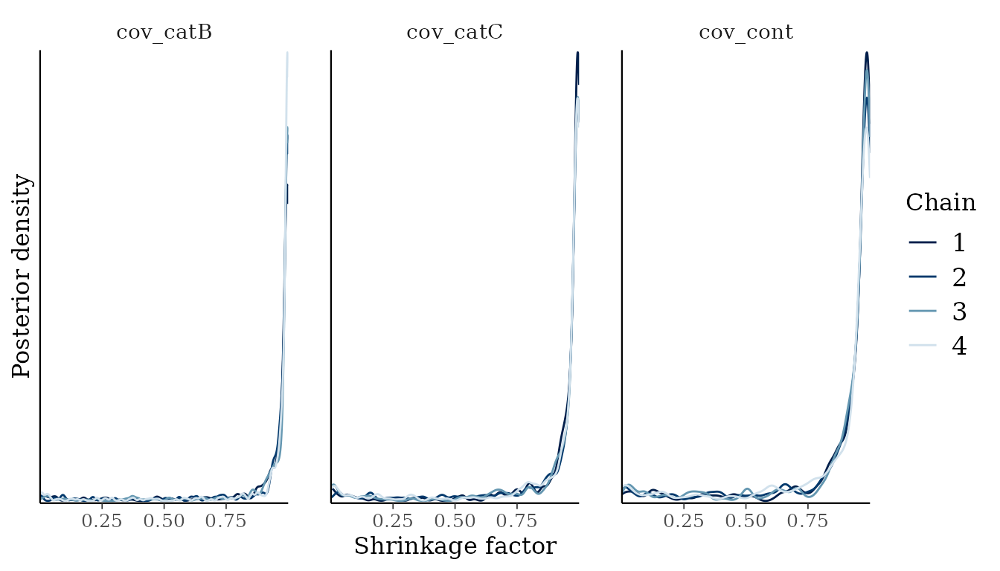
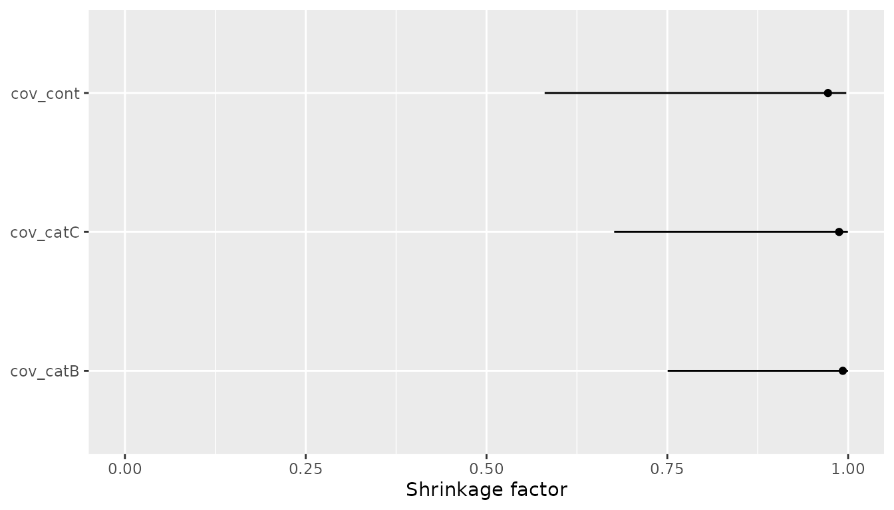

Covariate Selection with the Horseshoe Prior
Source:vignettes/covariate-selection-horseshoe.Rmd
covariate-selection-horseshoe.RmdOverview
Covariate selection in joint models is often difficult because each candidate covariate can interact with the survival model, the longitudinal model, and the association between them. The regularized horseshoe prior provides a Bayesian shrinkage approach: include the candidate covariates in one model, shrink most survival coefficients strongly towards zero, and allow a smaller number of coefficients to escape that shrinkage when supported by the data.
In jmpost, this workflow is available for the survival
covariate coefficients through prior_horseshoe(). This
vignette starts from the prior specification and then shows a complete
joint model example in which the survival covariates use the horseshoe
prior. The fitted model can be inspected through the posterior
coefficient draws and through the shrinkage factors extracted with
shrinkage().
Theory
The horseshoe prior is a global-local shrinkage prior (Carvalho, Polson, and
Scott 2010). A global parameter shrinks all coefficients
towards zero, while coefficient-level local parameters allow selected
coefficients to remain large. The regularized horseshoe (Piironen and
Vehtari 2017) adds a slab component that regularizes
coefficients that escape the main shrinkage. This is the
parameterization used by jmpost, following the same
notation as brms (Bürkner 2017). Details are provided
in the statistical specifications vignette here.
The hyperparameters map to prior_horseshoe() arguments
as follows:
-
df: local degrees of freedom, -
df_global: global degrees of freedom, -
df_slab: slab degrees of freedom, -
scale_global: global scale, -
scale_slab: slab scale,
The local shrinkage parameters let individual coefficients escape the global shrinkage . The slab scale and slab degrees of freedom control how much very large coefficients are regularized. Smaller values encode stronger prior belief that only a small number of candidate covariates are relevant.
A useful posterior diagnostic is the shrinkage factor
Values of close to 1 indicate strong shrinkage towards zero. Values close to 0 indicate little shrinkage. The shrinkage factor should be read together with the coefficient posterior: it is evidence about how strongly the prior-likelihood combination pulled a coefficient towards zero, not a standalone posterior inclusion probability.
Simulate Example Data
We first simulate data from a joint model with a random-slope longitudinal submodel and a Weibull proportional hazards survival submodel. The survival model contains one categorical and one continuous candidate covariate. The categorical covariate contributes two columns to the design matrix, so the survival model has three covariate coefficients in total.
set.seed(129)
sim_data <- SimJointData(
design = list(
SimGroup(50, "Arm-A", "Study-X"),
SimGroup(50, "Arm-B", "Study-X")
),
longitudinal = SimLongitudinalRandomSlope(
times = c(1, 20, 50, 100, 150, 200, 250, 300),
intercept = 30,
slope_mu = c(1, 2),
slope_sigma = 0.2,
sigma = 20,
link_dsld = 0.1
),
survival = SimSurvivalWeibullPH(
lambda = 1 / 300,
gamma = 0.97,
time_max = 2000,
time_step = 1,
lambda_cen = 1 / 9000,
beta_cat = c(
"A" = 0,
"B" = 0.3,
"C" = 0.7
),
beta_cont = 0.3
)
)Then we prepare the corresponding objects:
os_data <- sim_data@survival
long_data <- sim_data@longitudinal
joint_data <- DataJoint(
subject = DataSubject(
data = os_data,
subject = "subject",
arm = "arm",
study = "study"
),
survival = DataSurvival(
data = os_data,
formula = Surv(time, event) ~ cov_cat + cov_cont
),
longitudinal = DataLongitudinal(
data = long_data,
formula = sld ~ time,
threshold = 5
)
)Before setting priors or interpreting the output, it is a good habit
to check the survival design matrix. With covariates() we
can access the column names, which map to the corresponding survival
coefficients that receive the horseshoe prior.
head(model.matrix(joint_data@survival))
#> cov_catB cov_catC cov_cont
#> [1,] 1 0 -1.1209000
#> [2,] 0 1 -0.9897245
#> [3,] 0 1 -1.3746970
#> [4,] 0 1 -1.3556451
#> [5,] 1 0 1.9967553
#> [6,] 1 0 0.6958700
survival_covariates <- covariates(joint_data@survival)
survival_covariates
#> [1] "cov_catB" "cov_catC" "cov_cont"Fit a Joint Model
Now we define a joint model. The longitudinal model and the
association link use standard priors. The survival model uses
prior_horseshoe() for the vector of survival covariate
coefficients:
joint_model <- JointModel(
longitudinal = LongitudinalRandomSlope(),
survival = SurvivalWeibullPH(
beta = prior_horseshoe(
df = 1,
df_global = 1,
df_slab = 4,
scale_global = 0.3,
scale_slab = 2
)
),
link = linkDSLD()
)The choice above uses half-Cauchy priors for the local and global
shrinkage parameters, because df = 1 and
df_global = 1. The relatively small
scale_global = 0.3 favours sparse survival effects in this
small example, while scale_slab = 2 still allows
meaningfully large log-hazard coefficients when the data support
them.
The following code fits the model. In a serious analysis, increase the number of warmup and sampling iterations and check convergence carefully.
fit <- sampleStanModel(
joint_model,
data = joint_data,
iter_warmup = 500,
iter_sampling = 500,
chains = 4,
parallel_chains = 4,
seed = 325,
refresh = 0,
show_exceptions = FALSE,
show_messages = FALSE
)
#> Warning: 102 of 2000 (5.0%) transitions ended with a divergence.
#> See https://mc-stan.org/misc/warnings for details.Inspect Coefficients
After fitting, let’s inspect the coefficient posterior and standard
MCMC diagnostics. The survival covariate coefficients are stored in
beta_os_cov.
stan_fit <- cmdstanr::as.CmdStanMCMC(fit)
stan_fit$summary(
variables = c(
"beta_os_cov",
"prior_global_beta_os_cov",
"prior_slab_beta_os_cov"
)
)
#> # A tibble: 5 × 10
#> variable mean median sd mad q5 q95 rhat ess_bulk ess_tail
#> <chr> <dbl> <dbl> <dbl> <dbl> <dbl> <dbl> <dbl> <dbl> <dbl>
#> 1 beta_os_cov[1] 0.112 0.0566 0.190 0.129 -0.128 0.485 1.00 991. 1058.
#> 2 beta_os_cov[2] 0.209 0.157 0.242 0.224 -0.0757 0.684 1.01 600. 1049.
#> 3 beta_os_cov[3] 0.302 0.305 0.121 0.124 0.0914 0.492 1.01 716. 349.
#> 4 prior_global_b… 0.485 0.279 0.973 0.228 0.0621 1.41 1.00 733. 694.
#> 5 prior_slab_bet… 1.83 1.13 2.85 0.788 0.412 4.95 1.00 1450. 975.The coefficient names come from the design matrix:
beta_summary <- stan_fit$summary("beta_os_cov")
beta_summary$covariate <- survival_covariates
beta_summary[, c("covariate", "median", "q5", "q95", "rhat", "ess_bulk")]
#> # A tibble: 3 × 6
#> covariate median q5 q95 rhat ess_bulk
#> <chr> <dbl> <dbl> <dbl> <dbl> <dbl>
#> 1 cov_catB 0.0566 -0.128 0.485 1.00 991.
#> 2 cov_catC 0.157 -0.0757 0.684 1.01 600.
#> 3 cov_cont 0.305 0.0914 0.492 1.01 716.Coefficients whose posterior remains close to zero and whose shrinkage factors are close to 1 are natural candidates to treat as weakly supported covariates. Coefficients whose posterior is away from zero and whose shrinkage factors are closer to 0 have escaped shrinkage and are more strongly supported by the model.
Extract and Plot Shrinkage Factors
Let’s use the shrinkage() function to extract the
posterior draws of
.
The returned draws are named with the survival covariate names, so they
can be plotted or summarised directly.
shrinkage_draws <- shrinkage(fit)
posterior::variables(shrinkage_draws)
#> [1] "cov_catB" "cov_catC" "cov_cont"
summary(shrinkage_draws)
#> # A tibble: 3 × 10
#> variable mean median sd mad q5 q95 rhat ess_bulk ess_tail
#> <chr> <dbl> <dbl> <dbl> <dbl> <dbl> <dbl> <dbl> <dbl> <dbl>
#> 1 cov_catB 0.916 0.993 0.201 0.0107 0.379 1.000 1.01 601. 521.
#> 2 cov_catC 0.894 0.988 0.225 0.0180 0.232 1.000 1.01 619. 818.
#> 3 cov_cont 0.872 0.972 0.233 0.0367 0.214 0.999 1.00 549. 432.One compact visual summary is a density plot of the shrinkage factors.
library(bayesplot)
#> This is bayesplot version 1.15.0
#> - Online documentation and vignettes at mc-stan.org/bayesplot
#> - bayesplot theme set to bayesplot::theme_default()
#> * Does _not_ affect other ggplot2 plots
#> * See ?bayesplot_theme_set for details on theme setting
mcmc_dens_overlay(shrinkage_draws) +
ggplot2::labs(
x = "Shrinkage factor",
y = "Posterior density"
)
We see that both coefficients for the categorical covariate have shrinkage factors near 1, while the continuous covariate’s shrinkage factor is a bit more distributed towards smaller values.
A second useful display is the median shrinkage factor with an interval for each covariate:
library(dplyr)
library(ggplot2)
shrinkage_summary <- posterior::summarise_draws(
shrinkage_draws,
median,
~ quantile(.x, 0.1),
~ quantile(.x, 0.9)
) |>
dplyr::rename(q10 = `10%`, q90 = `90%`)
ggplot(shrinkage_summary, aes(x = median, y = variable)) +
geom_errorbar(aes(xmin = q10, xmax = q90), width = 0) +
geom_point() +
scale_x_continuous(limits = c(0, 1)) +
labs(
x = "Shrinkage factor",
y = NULL
)
Interpret the Output
In this simulated example, the design matrix contains
cov_catB, cov_catC, and cov_cont.
The data were generated with a small effect for cov_catB, a
larger positive effect for cov_catC, and a moderate
positive effect for cov_cont.
The horseshoe analysis should therefore be interpreted along these lines:
- A shrinkage factor near 1 for
cov_catB, combined with a coefficient posterior close to zero, would indicate that the model sees little evidence for that weak covariate. - Smaller shrinkage factors for
cov_catCandcov_cont, combined with coefficient posteriors away from zero, would indicate that these covariates escaped the global shrinkage. - Intermediate shrinkage factors should be treated as uncertainty, not as an automatic include/exclude decision.
The practical decision is still scientific. The regularized horseshoe helps rank and regularize many candidate covariates in a single joint model fit, but final selection should also consider prior clinical plausibility, multiplicity of candidate transformations, model diagnostics, and posterior predictive performance.
Practical Guidance
The global scale is the main sparsity control. Smaller
scale_global values expect fewer relevant covariates;
larger values allow more coefficients to remain away from zero. In
applied work, this choice should reflect the number of candidate
covariates and the expected number of non-negligible effects.
The slab scale should be large enough for plausible survival effects
but not so large that implausible log-hazard ratios are effectively
unregularized. For standardized continuous covariates, a
scale_slab around 2 is often already wide on the log-hazard
scale. For unstandardized covariates, first consider whether the
covariate scale itself should be transformed or standardized.
Finally, the horseshoe prior is a shrinkage prior, not a replacement for model checking. Always inspect convergence diagnostics, posterior predictive fit, and sensitivity to reasonable prior choices before using the selected covariates for scientific conclusions.